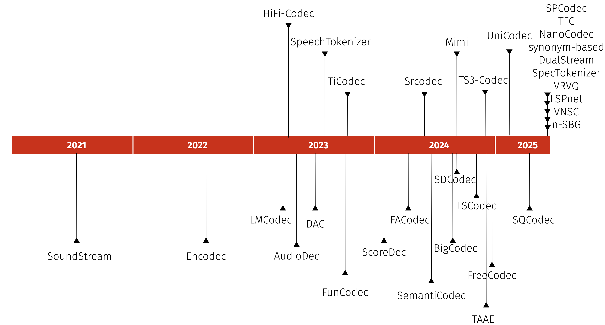
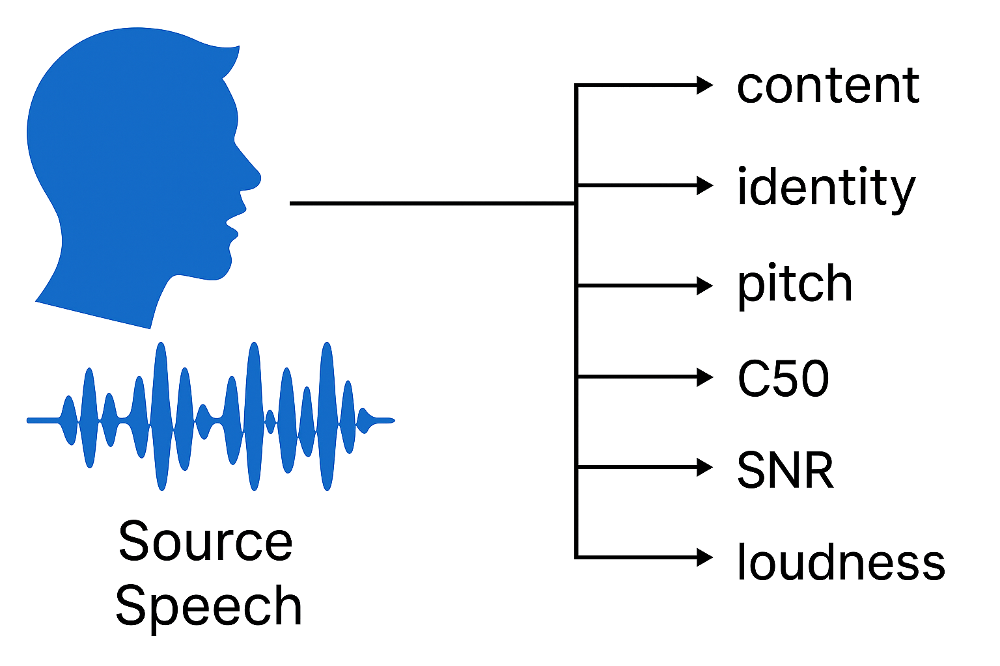
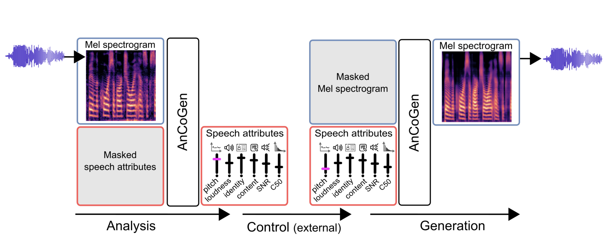
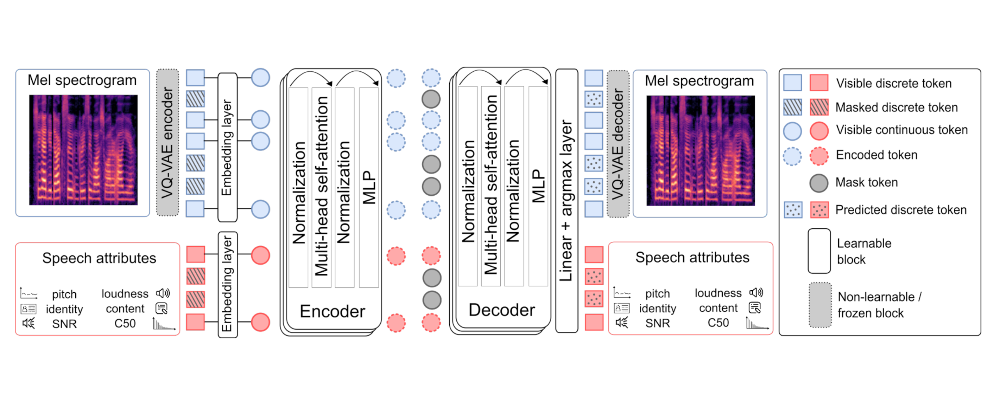
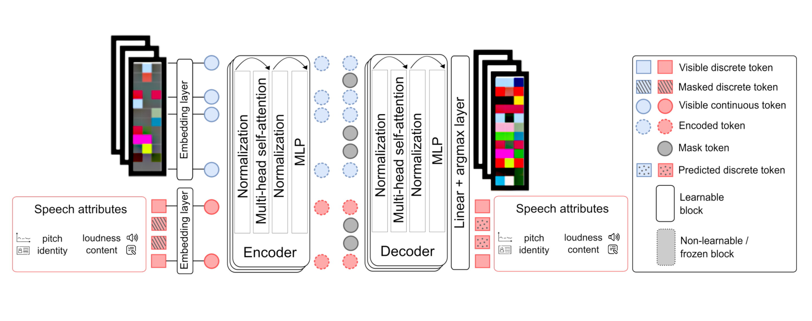
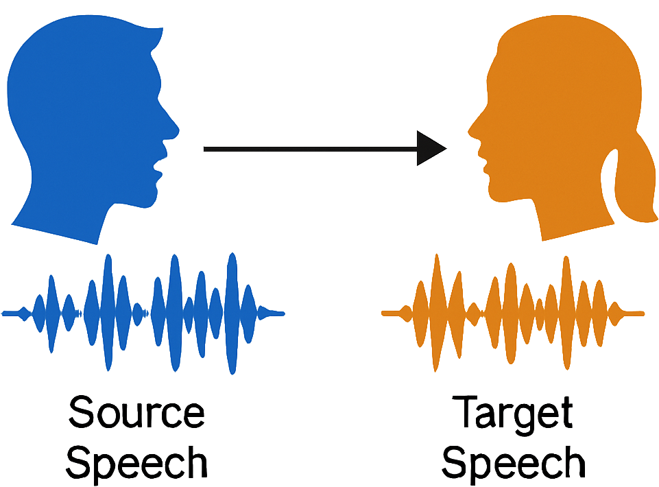
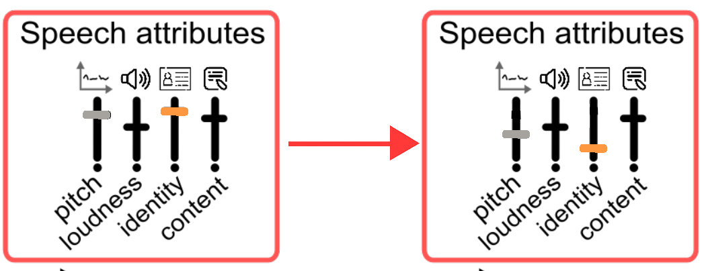
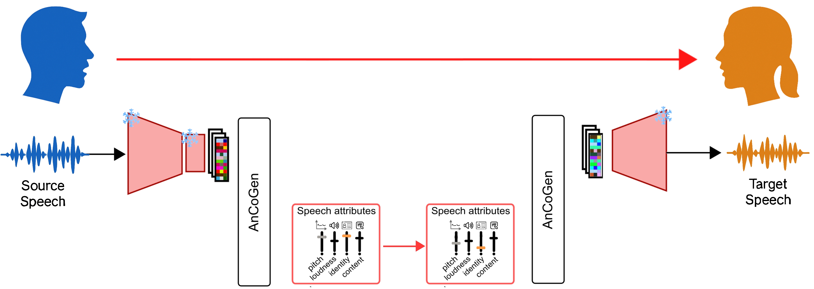

Bringing Interpretability to Neural Audio Codecs
Interspeech 2025
Samir Sadok1,*, Julien Hauret2,3,*, Éric Bavu2
1 Inria, Université Grenoble Alpes, CNRS, LJK, France
2 LMSSC, Conservatoire national des arts et métiers (Cnam), Paris, France
3 APC, French-German Research Institute of Saint-Louis, France
* Equal contribution

Context
Codecs overview
Neural Audio Codecs Timeline
A diverse subset
DAC
Kumar, R., et al. "High-fidelity audio compression with improved rvqgan." NeurIPS, 2023.
SpeechTokenizer
Zhang, X. et al. "Unified speech tokenizer for speech large language models." ICLR, 2024.
BigCodec
Xin, D. et al. "Pushing the limits of low-bitrate neural speech codec." arXiv:2409.05377, 2024.
Mimi
Défossez, A. et al. "Moshi: a speech-text foundation model for real-time dialogue." arXiv:2410.00037, 2024.
Specifications
| DAC | 16, 24 or 44.1 | 86 | 1024 | 9 |
| SpeechTokenizer | 16 | 50 | 1024 | 8 |
| BigCodec | 16 | 80 | 8192 | 1 |
| Mimi | 24 | 12.5 | 2048 | 1 + 31 |
Analysis
Where are speech attributes encoded in neural audio codecs?
Speech attributes
Content
Deterministic mapping between HuBERT's and codec's token ?
librispeech-test-clean
t-SNE visualisation of content
t-SNE visualisation of identity
t-SNE visualisation of pitch
Mutual Information (MI) between tokens and speech attributes
librispeech-test-clean
Synthesis
How to analyze and control audio from codec tokens with AnCoGen?
Ancogen-Melspectrogram : principle
Ancogen-Melspectrogram : architecture
Ancogen-Codec : architecture
Ancogen-Codec : architecture



AnCoGen: Analysis, Control and Generation of Speech with a Masked Autoencoder. ICASSP 2025, Hyderabad, India
Bringing interpretability to Neural Audio Codecs. Submitted to Interspeech 2025, Rotterdam, Netherlands
ℹ️ Speech attributes used for training
- Pitch : CREPE (https://github.com/marl/crepe )
- Content : HuBERT (https://github.com/bshall/hubert )
- Identity : ECAPA-TDNN (https://github.com/TaoRuijie/ECAPA-TDNN )
- Loudness : sliding RMS value of the signal
Resynthesis results
- Task: :
- Predict speech attributes and reconstruct high-quality audio from attributes alone
- Comparison with the audio from the codec alone
- Metrics :
- Noresqa-MOS (↑), DNSMOS-BAK (↑), STOI (↑), speechBERTscore (↑)
- Test dataset :
Librispeech
AncoGen-Melspectrogram
AncoGen-BigCodec
AncoGen-SpeechTokenizer
Original
Speaker Identity switch: principle


Speaker Identity switch: principle

Speaker Identity Switch Results
- Task:
- Modify speaker identity while preserving linguistic content (Speaker Identity Switch)
- Metrics:
- Noresqa-MOS (↑, <5), Cosine Similarity (↑, <1) using Resemblyzer embeddings
- Test dataset:
Librispeech
AncoGen-Melspectrogram
AncoGen-BigCodec
AncoGen-SpeechTokenizer
Source
Target
Thank you for your attention
samir.sadok@inria.fr · julien.hauret@lecnam.net · eric.bavu@lecnam.net